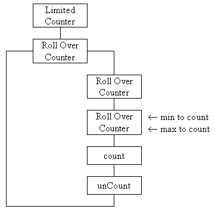

This is a non-abstract class with public constructors which does not introduce any additional data attributes and so specialises behaviour only. It also inherits the numberCountedIs(), reset(), isAtMinimum(), isAtMaximum(), minimumIs() and maximumIs() actions from its parent classes.